El cálculo de distancia entre dos puntos es una herramienta esencial en diversos campos,
desde la geometría hasta la navegación y la ciencia de datos. Nos permite medir la separación entre dos ubicaciones en un espacio, ya sea en un plano bidimensional o en un espacio tridimensional.
Esta noción de distancia no solo es fundamental en matemáticas, sino que también tiene aplicaciones prácticas en el mundo real, como calcular la distancia entre ciudades en un mapa, determinar la proximidad entre objetos en un espacio tridimensional o incluso evaluar similitudes entre conjuntos de datos.
Distancia entre dos puntos
Para estudiar la distancia entre dos punto consideremos la siguiente figura.
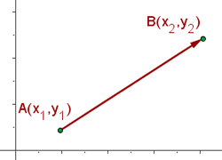
En la figura podemos encontrar dos puntos 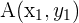y 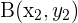 en el plano cartesiano unidos por un vector.
La magnitud del vector coloreado en rojo y que une los puntos,
es el valor que representa distancia entre los puntos y .
Fórmula para calcular la distancia entre dos puntos y el teorema de Pitágoras
La fórmula para calcular dicha magnitud está dada por la siguiente expresión:
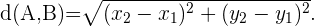
El valor de esta fórmula puede ser obtenido usando el Teorema de Pitagoras. Para ello, consideremos el triángulo rectángulo de vértices
, , 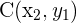
Notemos que el valor de la hipotenusa de este triángulo es la distancia entre los puntos
Y
Ya que la magnitud de los segmentos que unen
Y , Y son 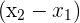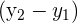
El Teorema de Pitagoras afirma que el valor de la hipotenusa o la distancia entre
Y es
Ejemplos de distancia entre dos puntos
Calcular la distancia entre los puntos: 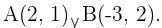
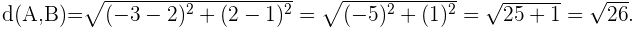
Determinar la condición para que los puntos 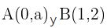 disten una unidad.
Si la distancia entre ambos es uno, esto quiere decir que 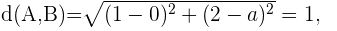
elevando al cuadrado para eliminar la raiz 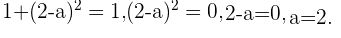
Probar que los puntos: 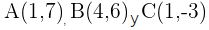y pertenecen a una circunferencia de centro 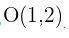.
Si 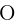es el centro de la circunferencia, para que 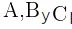 pertenezcan a una circunferencia, por definición las distancias de
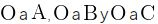deben ser iguales. Comprobemos esto utilizando la fórmula de la distancia entre dos puntos.
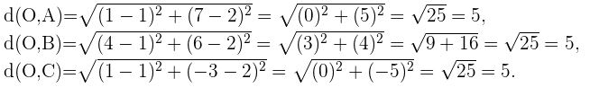
 y .
y . , 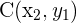
, 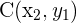